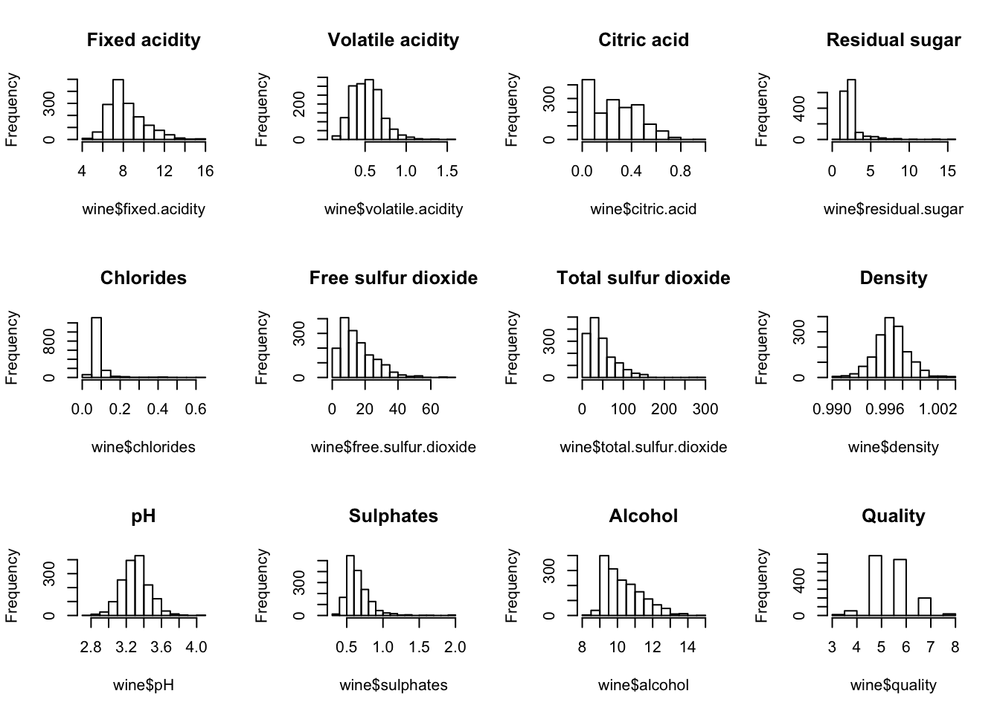
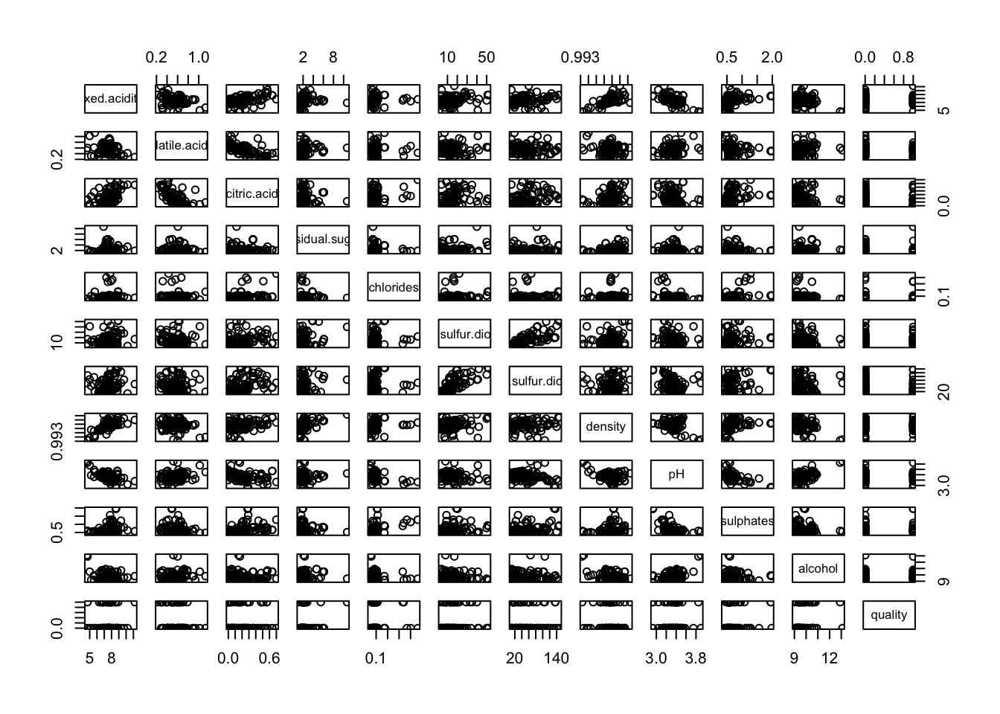
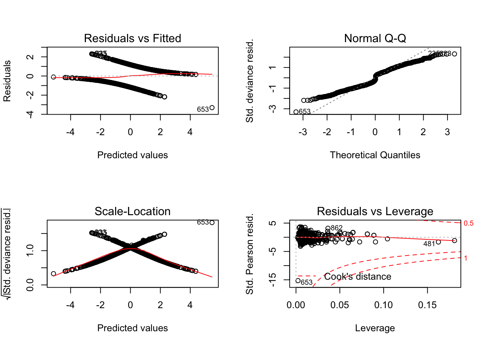
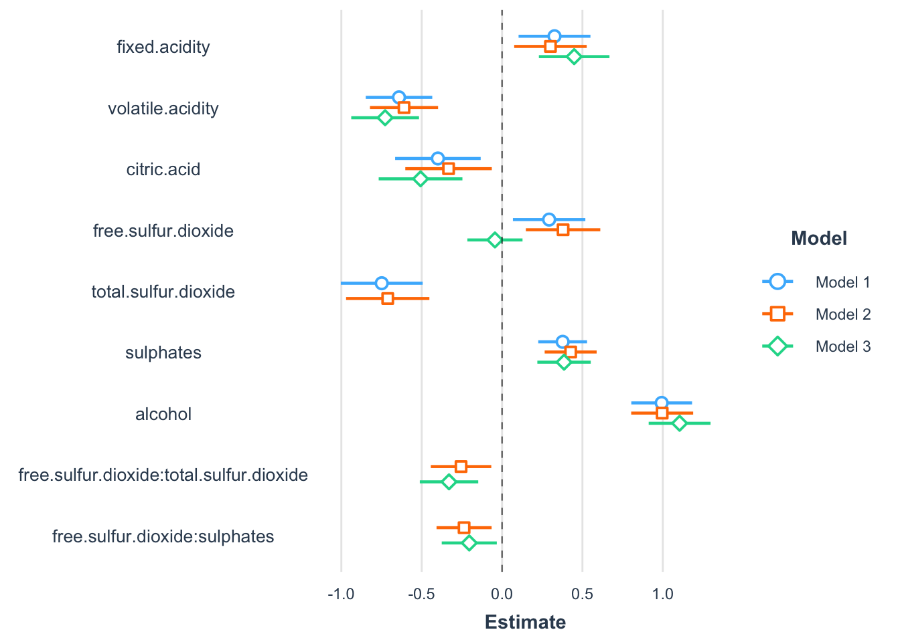

Using the red wine data, we built a model that predicts if a certain wine will be of high or low quality based on a number of factors. Quality is rated on a scale of 1 to 10; with 1 to 5 being low quality, and 6 to 10 being high quality. We fit a logistic regression model to a training set from the data and analyze residual plots, as well as multicollinearity and influential observation problems. We then perform variable selection on the regression model and introduce various interaction terms to see if they should be included in the model. Lastly, we test the prediction ability of the best models on the test set. Our final model has a prediction accuracy of 75.6%, and alcohol appears to be the most significant factor affecting quality.
In this data analysis, we examine the relationship between the quality of red wine and 11 independent variables in a dataset of 1600 unique observations. We perform logistic regression on the dataset in order to attain a final model that can predict quality based on those factors. We intend on picking out the factors that have the most notable effects on the quality of wine to get a better understanding of the specific variables that are vital in the prediction of whether a wine will be high or low quality.
For uniqueness, we first introduced a new data point to the red wine data. To ensure this point would accurately represent a realistic wine, we chose to randomize an existing value for each variable from within the data frame to create our new point.
#Read data, and add new point
wine <- read.table(file="winequality-red.csv",header=TRUE,sep=";")
wine <- rbind(wine, c(8, 0.54, 0.49, 2.1, 0.067, 5, 16, 0.9962, 3.16, 0.92, 11.7, 5))This is the code we used for randomizing.
#Sampling new observation
c(sample(wine$fixed.acidity,1),sample(wine$volatile.acidity,1), sample(wine$citric.acid,1),
sample(wine$residual.sugar,1), sample(wine$chlorides,1), sample(wine$free.sulfur.dioxide,1),
sample(wine$total.sulfur.dioxide,1), sample(wine$density,1), sample(wine$pH,1), sample(wine$sulphates,1),
sample(wine$alcohol,1), sample(wine$quality,1))We constructed histograms for each variable in the data to see their distributions and possible outliers.

We observed from the histograms that most of the variables were left-skewed and approximately followed a chi-squared distribution, with the exception of density and pH, which appeared to follow approximate normal distributions. Aside from fixed acidity and density, most of the histograms seemed to show outliers as well. We also observed that the data points in chlorides and residual sugar seemed to be very concentrated. Looking at the histogram for quality, it was obvious that this variable is discrete.
Since the original data rated quality on a scale of 1 to 10, we had to convert this column to be a binary variable in order to carry out a logistic regression; a linear regression would not provide a good fit to a response variable of this type.
#Convert quality to a binary variable
qual <- c(wine$quality)
for(i in 1:1600){
qual[i]<-ifelse(qual[i]>=6,1,0)
}
wine$quality <- qualTo visualize the data, we used the pairs plot function. However, we noticed that these plots were difficult to interpret due to the amount of observations in the data frame; because of this, we looked at only the first 100 observations to visualize the data.
#Create pairs plot using only the first 100 obervations
pairs(wine[1:100,])
From the pairs plot, we could see evidence of collinearity between the variables density and fixed acidity, fixed acidity and pH, volatile acidity and citric acid, free sulfur dioxide and total sulfur dioxide, and slight correlation between fixed acidity and citric acid. The pairs plot, however, did not validate these assumptions with enough accuracy, so later on we checked for collinearity again using VIF and the pairwise correlation matrix.
#Call libraries needed for the model fitting process
library(car)## Loading required package: carDatalibrary(pscl)## Classes and Methods for R developed in the
## Political Science Computational Laboratory
## Department of Political Science
## Stanford University
## Simon Jackman
## hurdle and zeroinfl functions by Achim Zeileislibrary(jtools)
library(ggstance)In order to conduct a cross-validation once we were finished fitting our model, we separated the data into training and test sets. We fit our model on the training set, which was made up of the first 1000 obervations, and tested the prediction accuracy on the test set, which was made up of the last 600 observations.
#Create training and test sets from the data
train <- wine[1:1000,]
test <- wine[1001:1600,]In the interest of constructing an accurate model, we had to make sure the training set consisted of approximately equal proportions of high and low quality wine. To do so, we used a contingency table, and ensured that that was the case below.
#check for approximately equal proportions
table(train$quality)##
## 0 1
## 505 495As shown above, the proportions in the training set were very close to being equal, so we went ahead with the model fitting.
The first thing we did was fit a logistic regression model to the training set that included all the predictors.
#Fit an initial logistic regression model
train.lm <- glm(quality~fixed.acidity+volatile.acidity+citric.acid+residual.sugar+
chlorides+free.sulfur.dioxide+total.sulfur.dioxide+density+
pH+sulphates+alcohol, data=train, family=binomial(link="logit"))
summary(train.lm)##
## Call:
## glm(formula = quality ~ fixed.acidity + volatile.acidity + citric.acid +
## residual.sugar + chlorides + free.sulfur.dioxide + total.sulfur.dioxide +
## density + pH + sulphates + alcohol, family = binomial(link = "logit"),
## data = train)
##
## Deviance Residuals:
## Min 1Q Median 3Q Max
## -3.3034 -0.8551 -0.1960 0.8680 2.3082
##
## Coefficients:
## Estimate Std. Error z value Pr(>|z|)
## (Intercept) 43.371689 99.153623 0.437 0.66181
## fixed.acidity 0.175249 0.124493 1.408 0.15922
## volatile.acidity -3.242799 0.608353 -5.330 9.80e-08 ***
## citric.acid -1.478202 0.710904 -2.079 0.03759 *
## residual.sugar 0.053876 0.077451 0.696 0.48667
## chlorides -2.548310 1.828813 -1.393 0.16349
## free.sulfur.dioxide 0.030204 0.011651 2.592 0.00953 **
## total.sulfur.dioxide -0.023736 0.004053 -5.856 4.74e-09 ***
## density -53.165879 101.282779 -0.525 0.59964
## pH 0.245093 0.892596 0.275 0.78364
## sulphates 2.435009 0.494915 4.920 8.65e-07 ***
## alcohol 0.842009 0.126057 6.680 2.40e-11 ***
## ---
## Signif. codes: 0 '***' 0.001 '**' 0.01 '*' 0.05 '.' 0.1 ' ' 1
##
## (Dispersion parameter for binomial family taken to be 1)
##
## Null deviance: 1386.2 on 999 degrees of freedom
## Residual deviance: 1038.9 on 988 degrees of freedom
## AIC: 1062.9
##
## Number of Fisher Scoring iterations: 4Looking at the p-values of each coefficient, half of them seemed to be insignificant towards the model.
As a first step in determining whether our model was a good fit for the data, we analyzed the residual plots to see if they fit the assumptions of a logistic regression model.
#Plot the residuals
par(mfrow=c(2,2)) #combining 4 plots into a 2x2 matrix
plot(train.lm)
Noting that these residual plots might have been more helpful in determining if a linear regression model is meeting the assumptions, these plots all looked to be fairly regular when it comes to a logistic regression. Because of this, we concluded that no data transformations were needed at this time. Aside from multicollinearity, we noticed that point 653 seemed to lie far away from the rest of the data in most of the plots, so we suspected this might be an outlier. We later looked at this in more detail.
After this initial step, we used this model to check the VIF using the vif() function in r. We chose to take variables that have a VIF greater than 5 to have evidence of collinearity.
#Examine the VIF on the initial model
vif(train.lm)## fixed.acidity volatile.acidity citric.acid
## 8.987413 1.758513 3.501039
## residual.sugar chlorides free.sulfur.dioxide
## 1.593016 1.604283 2.213781
## total.sulfur.dioxide density pH
## 2.441013 5.080494 3.558353
## sulphates alcohol
## 1.483001 1.937554Looking at the results, we saw that fixed acidity and density had VIFs over 5, while the rest of the predictors sat well below 5. This told us that there may have been some form of collinearity between fixed acidity and density.
Aside from the VIFs, we also looked at the pairwise correlation matrix for evidene of collinearity.
#Pairwise correlation matrix
train.wine.x = cbind(train$fixed.acidity, train$volatile.acidity, train$citric.acid,
train$residual.sugar, train$chlorides, train$free.sulfur.dioxide,
train$total.sulfur.dioxide, train$density,
train$pH, train$sulphates, train$alcohol)
train.wine.matrix=as.matrix(scale(train.wine.x,center=TRUE,scale=TRUE))
train.wine.xx=t(train.wine.matrix)%*%train.wine.matrix/(length(train.wine.x[,1])-1)
print(train.wine.xx)## [,1] [,2] [,3] [,4] [,5]
## [1,] 1.00000000 -0.279610415 0.69338400 0.15476433 0.025442573
## [2,] -0.27961042 1.000000000 -0.53911382 -0.01521518 0.007823871
## [3,] 0.69338400 -0.539113819 1.00000000 0.12513206 0.189787000
## [4,] 0.15476433 -0.015215179 0.12513206 1.00000000 -0.010117308
## [5,] 0.02544257 0.007823871 0.18978700 -0.01011731 1.000000000
## [6,] -0.14366807 0.017642992 -0.05882465 0.12339652 -0.006226657
## [7,] -0.17634564 0.121061949 -0.01915241 0.13199717 0.035400564
## [8,] 0.68156895 -0.021954699 0.38549853 0.37129302 0.131354288
## [9,] -0.69363289 0.240536007 -0.56242907 -0.07903022 -0.242265436
## [10,] 0.17508058 -0.247264146 0.28761262 0.01489009 0.394259618
## [11,] 0.06654002 -0.162100571 0.17001198 0.13817514 -0.173606757
## [,6] [,7] [,8] [,9] [,10]
## [1,] -0.143668067 -0.176345639 0.681568947 -0.693632887 0.17508058
## [2,] 0.017642992 0.121061949 -0.021954699 0.240536007 -0.24726415
## [3,] -0.058824647 -0.019152410 0.385498533 -0.562429071 0.28761262
## [4,] 0.123396518 0.131997168 0.371293023 -0.079030215 0.01489009
## [5,] -0.006226657 0.035400564 0.131354288 -0.242265436 0.39425962
## [6,] 1.000000000 0.693624424 -0.041151659 0.100613730 0.05586333
## [7,] 0.693624424 1.000000000 0.009229656 -0.002166079 0.05028981
## [8,] -0.041151659 0.009229656 1.000000000 -0.374378775 0.12618587
## [9,] 0.100613730 -0.002166079 -0.374378775 1.000000000 -0.24970154
## [10,] 0.055863327 0.050289810 0.126185869 -0.249701536 1.00000000
## [11,] -0.033260263 -0.187491548 -0.345582227 0.149308532 0.10632307
## [,11]
## [1,] 0.06654002
## [2,] -0.16210057
## [3,] 0.17001198
## [4,] 0.13817514
## [5,] -0.17360676
## [6,] -0.03326026
## [7,] -0.18749155
## [8,] -0.34558223
## [9,] 0.14930853
## [10,] 0.10632307
## [11,] 1.00000000This confirmed what we observed in the pairs plot and the VIF values: a correlation of approximately 0.7 between fixed acidity and pH, fixed acidity and density, and fixed acidity and citric acid. There were also slight correlations between volatile acidity and citric acid, and citric acid and pH, both around 0.5.
We then looked at the diagonal of the hat matrix to check for leverage points.
#X matrix and hat matrix diagonal
train.X<-cbind(rep(1,length(train$quality)), train$fixed.acidity, train$volatile.acidity,
train$citric.acid, train$residual.sugar, train$chlorides, train$free.sulfur.dioxide,
train$total.sulfur.dioxide, train$density, train$pH, train$sulphates, train$alcohol)
train.hii<-diag(train.X%*%solve(t(train.X)%*%train.X)%*%t(train.X))
# Identify points of high leverage
train.p<-ncol(train.X) # number of betas in the model (beta0,beta1,beta2)
train.n<-nrow(train.X) # number of observations
which(train.hii>2*train.p/train.n)## [1] 14 18 20 34 39 43 46 82 84 87 92 93 95 96 107 127 128 143 145
## [20] 152 170 199 227 244 245 259 282 292 325 326 340 354 355 379 391 397 401 416
## [39] 452 464 481 495 502 503 511 516 554 555 556 558 560 565 585 592 596 615 634
## [58] 650 652 653 673 691 693 696 724 731 755 796 834 837 838 862 912 918 924 926
## [77] 927 983We could see that the point we noticed earlier in the residual plots, point 653, was also in this list of high leverage points.
We then checked the Cook’s D value of the observations.
#Influence measures
wine.inf = influence.measures(train.lm)
which(wine.inf[["infmat"]][,15] > 1)## named integer(0)All the Cook’s D values appeared to be below 1. We decided to consider point 653 only as an influential point, and removed it from the dataset.
#Remove outlier 653
train.outliers=train[-653,]
train.out.lm = glm(quality~fixed.acidity+volatile.acidity
+citric.acid+residual.sugar+chlorides
+free.sulfur.dioxide+total.sulfur.dioxide+density+pH
+sulphates+alcohol, data = train.outliers, family = binomial)
summary(train.out.lm)##
## Call:
## glm(formula = quality ~ fixed.acidity + volatile.acidity + citric.acid +
## residual.sugar + chlorides + free.sulfur.dioxide + total.sulfur.dioxide +
## density + pH + sulphates + alcohol, family = binomial, data = train.outliers)
##
## Deviance Residuals:
## Min 1Q Median 3Q Max
## -2.2334 -0.8351 -0.1906 0.8472 2.3138
##
## Coefficients:
## Estimate Std. Error z value Pr(>|z|)
## (Intercept) 79.247329 100.245210 0.791 0.4292
## fixed.acidity 0.235433 0.126312 1.864 0.0623 .
## volatile.acidity -3.309091 0.613058 -5.398 6.75e-08 ***
## citric.acid -1.667278 0.718153 -2.322 0.0203 *
## residual.sugar 0.082920 0.078279 1.059 0.2895
## chlorides -2.181804 1.838518 -1.187 0.2353
## free.sulfur.dioxide 0.029229 0.011723 2.493 0.0127 *
## total.sulfur.dioxide -0.023098 0.004064 -5.684 1.32e-08 ***
## density -90.504881 102.411081 -0.884 0.3768
## pH 0.440575 0.901078 0.489 0.6249
## sulphates 2.467038 0.497337 4.960 7.03e-07 ***
## alcohol 0.857163 0.127601 6.718 1.85e-11 ***
## ---
## Signif. codes: 0 '***' 0.001 '**' 0.01 '*' 0.05 '.' 0.1 ' ' 1
##
## (Dispersion parameter for binomial family taken to be 1)
##
## Null deviance: 1384.8 on 998 degrees of freedom
## Residual deviance: 1027.5 on 987 degrees of freedom
## AIC: 1051.5
##
## Number of Fisher Scoring iterations: 5We noticed that the AIC for the model went down significantly. Removing point 653 also seemed to have an influence on the estimated coefficient of density.
Next, we carried out backward variable elimination on the new model.
#Backward variable elimination
train.lm.red <- step(train.out.lm,direction="backward",trace=FALSE)
summary(train.lm.red)##
## Call:
## glm(formula = quality ~ fixed.acidity + volatile.acidity + citric.acid +
## free.sulfur.dioxide + total.sulfur.dioxide + sulphates +
## alcohol, family = binomial, data = train.outliers)
##
## Deviance Residuals:
## Min 1Q Median 3Q Max
## -2.2224 -0.8486 -0.1851 0.8635 2.3904
##
## Coefficients:
## Estimate Std. Error z value Pr(>|z|)
## (Intercept) -9.734413 1.130360 -8.612 < 2e-16 ***
## fixed.acidity 0.178885 0.062554 2.860 0.00424 **
## volatile.acidity -3.591255 0.591237 -6.074 1.25e-09 ***
## citric.acid -1.996811 0.679194 -2.940 0.00328 **
## free.sulfur.dioxide 0.029348 0.011525 2.546 0.01088 *
## total.sulfur.dioxide -0.022471 0.003901 -5.761 8.37e-09 ***
## sulphates 2.057206 0.422933 4.864 1.15e-06 ***
## alcohol 0.970573 0.094239 10.299 < 2e-16 ***
## ---
## Signif. codes: 0 '***' 0.001 '**' 0.01 '*' 0.05 '.' 0.1 ' ' 1
##
## (Dispersion parameter for binomial family taken to be 1)
##
## Null deviance: 1384.8 on 998 degrees of freedom
## Residual deviance: 1030.7 on 991 degrees of freedom
## AIC: 1046.7
##
## Number of Fisher Scoring iterations: 5pR2(train.lm.red)## fitting null model for pseudo-r2## llh llhNull G2 McFadden r2ML r2CU
## -515.3322662 -692.4134923 354.1624522 0.2557449 0.2984878 0.3979945We saw from the lower AIC value and the McFadden’s pseudo R-squared in the range (0.2,0.4) that this model was a good fit. To confirm this was a good choice for the model, we then carried out stepwise variable elimination and compared which variables remained in the model.
#Stepwise variable elimination
train.lm.red.2 <- step(train.out.lm,direction="both",trace=FALSE)
summary(train.lm.red.2)##
## Call:
## glm(formula = quality ~ fixed.acidity + volatile.acidity + citric.acid +
## free.sulfur.dioxide + total.sulfur.dioxide + sulphates +
## alcohol, family = binomial, data = train.outliers)
##
## Deviance Residuals:
## Min 1Q Median 3Q Max
## -2.2224 -0.8486 -0.1851 0.8635 2.3904
##
## Coefficients:
## Estimate Std. Error z value Pr(>|z|)
## (Intercept) -9.734413 1.130360 -8.612 < 2e-16 ***
## fixed.acidity 0.178885 0.062554 2.860 0.00424 **
## volatile.acidity -3.591255 0.591237 -6.074 1.25e-09 ***
## citric.acid -1.996811 0.679194 -2.940 0.00328 **
## free.sulfur.dioxide 0.029348 0.011525 2.546 0.01088 *
## total.sulfur.dioxide -0.022471 0.003901 -5.761 8.37e-09 ***
## sulphates 2.057206 0.422933 4.864 1.15e-06 ***
## alcohol 0.970573 0.094239 10.299 < 2e-16 ***
## ---
## Signif. codes: 0 '***' 0.001 '**' 0.01 '*' 0.05 '.' 0.1 ' ' 1
##
## (Dispersion parameter for binomial family taken to be 1)
##
## Null deviance: 1384.8 on 998 degrees of freedom
## Residual deviance: 1030.7 on 991 degrees of freedom
## AIC: 1046.7
##
## Number of Fisher Scoring iterations: 5Conducting backward and stepwise regression procedures resulted in the same model, so we felt confident enough to pick this as one of the final model choices.
The variable elimination process casted out the variables residual sugar, chlorides, density, and pH. Since density had a potential problem with collinearity, we ran the vif function again, this time on the reduced model.
#VIF on reduced model
vif(train.lm.red)## fixed.acidity volatile.acidity citric.acid
## 2.211331 1.626320 3.162364
## free.sulfur.dioxide total.sulfur.dioxide sulphates
## 2.144041 2.253533 1.117436
## alcohol
## 1.042874Here, we clearly saw that reducing the model solved any problems we would have had with multicolinearity, as all the variables then had VIFs well below 5.
Next, we tried adding interaction terms to the reduced model. We added each pair of interactions between fixed acidity, volatile acidity, and citric acid; and each pair between free sulfur dioxide, total sulfur dioxide, and sulphates. We chose these interaction terms due to the fact that it was likely that there would be some form of interaction between the acidic variables and between the sulfuric variables. After adding the interaction terms, we performed another backward elimination on this model to see which interaction terms, if any, were significant.
#Adding interaction terms
train.int = glm(formula = quality ~ fixed.acidity + volatile.acidity + citric.acid +
free.sulfur.dioxide + total.sulfur.dioxide +
sulphates + alcohol + fixed.acidity:volatile.acidity +
volatile.acidity:citric.acid + fixed.acidity:citric.acid +
free.sulfur.dioxide:total.sulfur.dioxide +
total.sulfur.dioxide:sulphates + free.sulfur.dioxide:sulphates,
family = binomial, data = train.outliers)
#Backward elimination on model with intercations
train.int.step = step(train.int, direction="backward", trace=FALSE)
summary(train.int.step)##
## Call:
## glm(formula = quality ~ fixed.acidity + volatile.acidity + citric.acid +
## free.sulfur.dioxide + total.sulfur.dioxide + sulphates +
## alcohol + free.sulfur.dioxide:total.sulfur.dioxide + free.sulfur.dioxide:sulphates,
## family = binomial, data = train.outliers)
##
## Deviance Residuals:
## Min 1Q Median 3Q Max
## -2.2645 -0.8365 -0.1263 0.8038 2.4353
##
## Coefficients:
## Estimate Std. Error z value Pr(>|z|)
## (Intercept) -1.190e+01 1.300e+00 -9.153 < 2e-16
## fixed.acidity 1.651e-01 6.313e-02 2.615 0.00894
## volatile.acidity -3.416e+00 6.056e-01 -5.642 1.69e-08
## citric.acid -1.665e+00 6.867e-01 -2.425 0.01530
## free.sulfur.dioxide 1.616e-01 3.694e-02 4.374 1.22e-05
## total.sulfur.dioxide -9.705e-03 6.181e-03 -1.570 0.11640
## sulphates 4.290e+00 9.266e-01 4.630 3.66e-06
## alcohol 9.736e-01 9.615e-02 10.126 < 2e-16
## free.sulfur.dioxide:total.sulfur.dioxide -7.680e-04 2.888e-04 -2.659 0.00783
## free.sulfur.dioxide:sulphates -1.293e-01 4.782e-02 -2.705 0.00683
##
## (Intercept) ***
## fixed.acidity **
## volatile.acidity ***
## citric.acid *
## free.sulfur.dioxide ***
## total.sulfur.dioxide
## sulphates ***
## alcohol ***
## free.sulfur.dioxide:total.sulfur.dioxide **
## free.sulfur.dioxide:sulphates **
## ---
## Signif. codes: 0 '***' 0.001 '**' 0.01 '*' 0.05 '.' 0.1 ' ' 1
##
## (Dispersion parameter for binomial family taken to be 1)
##
## Null deviance: 1384.8 on 998 degrees of freedom
## Residual deviance: 1011.9 on 989 degrees of freedom
## AIC: 1031.9
##
## Number of Fisher Scoring iterations: 5pR2(train.int.step)## fitting null model for pseudo-r2## llh llhNull G2 McFadden r2ML r2CU
## -505.9534508 -692.4134923 372.9200830 0.2692900 0.3115368 0.4153936The backward elimination process omitted all the interaction terms except the ones between free sulfur dioxide and total sulfur dioxide; and between free sulfur dioxide and sulphates. The AIC became, again, significantly lower, and the McFadden’s pseudo R-squared value went up. This told us to include these two interactions in the model, and we chose this as another final model option.
From the summary of the model, we saw that the p-value of total sulfur dioxide was higher than the standard alpha level of 0.05. Since the stepwise regression function eliminated variables based on AIC, this regressor with a high p-value was left in the model. Because of this, we tried removing the regressor to see if the resulting model would be a good fit.
#Removing total sulfur due to high p value
train.3rd = glm(formula = quality ~ fixed.acidity + volatile.acidity +
citric.acid + free.sulfur.dioxide + sulphates + alcohol + free.sulfur.dioxide:total.sulfur.dioxide +
free.sulfur.dioxide:sulphates,family = binomial, data = train.outliers)
summary(train.3rd)##
## Call:
## glm(formula = quality ~ fixed.acidity + volatile.acidity + citric.acid +
## free.sulfur.dioxide + sulphates + alcohol + free.sulfur.dioxide:total.sulfur.dioxide +
## free.sulfur.dioxide:sulphates, family = binomial, data = train.outliers)
##
## Deviance Residuals:
## Min 1Q Median 3Q Max
## -2.32330 -0.83551 -0.09238 0.80488 2.44310
##
## Coefficients:
## Estimate Std. Error z value Pr(>|z|)
## (Intercept) -1.230e+01 1.284e+00 -9.577 < 2e-16
## fixed.acidity 1.761e-01 6.269e-02 2.809 0.00497
## volatile.acidity -3.548e+00 6.034e-01 -5.880 4.11e-09
## citric.acid -1.748e+00 6.827e-01 -2.560 0.01047
## free.sulfur.dioxide 1.687e-01 3.724e-02 4.530 5.91e-06
## sulphates 4.077e+00 9.193e-01 4.435 9.19e-06
## alcohol 9.957e-01 9.585e-02 10.388 < 2e-16
## free.sulfur.dioxide:total.sulfur.dioxide -1.134e-03 1.911e-04 -5.934 2.95e-09
## free.sulfur.dioxide:sulphates -1.212e-01 4.829e-02 -2.510 0.01208
##
## (Intercept) ***
## fixed.acidity **
## volatile.acidity ***
## citric.acid *
## free.sulfur.dioxide ***
## sulphates ***
## alcohol ***
## free.sulfur.dioxide:total.sulfur.dioxide ***
## free.sulfur.dioxide:sulphates *
## ---
## Signif. codes: 0 '***' 0.001 '**' 0.01 '*' 0.05 '.' 0.1 ' ' 1
##
## (Dispersion parameter for binomial family taken to be 1)
##
## Null deviance: 1384.8 on 998 degrees of freedom
## Residual deviance: 1014.3 on 990 degrees of freedom
## AIC: 1032.3
##
## Number of Fisher Scoring iterations: 5pR2(train.3rd)## fitting null model for pseudo-r2## llh llhNull G2 McFadden r2ML r2CU
## -507.1540438 -692.4134923 370.5188969 0.2675561 0.3098800 0.4131845This model had a slightly higher AIC and a slightly lower McFadden’s pseudo R-squared than the previous model, but the AIC remained significantly better than the reduced model without interaction terms. We picked this as the third choice for a final model.
We then checked the VIFs of the two interaction models.
#vif for interaction models
vif(train.int.step)## fixed.acidity
## 2.191169
## volatile.acidity
## 1.632358
## citric.acid
## 3.128806
## free.sulfur.dioxide
## 19.847174
## total.sulfur.dioxide
## 5.059445
## sulphates
## 4.849022
## alcohol
## 1.051684
## free.sulfur.dioxide:total.sulfur.dioxide
## 12.449819
## free.sulfur.dioxide:sulphates
## 20.578453vif(train.3rd)## fixed.acidity
## 2.145323
## volatile.acidity
## 1.603112
## citric.acid
## 3.092538
## free.sulfur.dioxide
## 19.522349
## sulphates
## 4.736759
## alcohol
## 1.035339
## free.sulfur.dioxide:total.sulfur.dioxide
## 5.028589
## free.sulfur.dioxide:sulphates
## 20.498822In the first interaction model, free sulfur dioxide and both interaction terms had VIF values significantly higher than 5. In the second model, free sulfur dioxide and the interaction between free sulfur dioxide and sulphates had VIF values higher than 5. Both of these were due to inevitable collinearity between the interaction term and the regressor that was included in that term, so this wasn’t cause for concern.
There was also one VIF value slightly higher than 5 in each model. We decided not to consider this as multicollinearity.
As an initial visualization of the three models we chose as options for the “best” model, we plotted each model’s variable coefficients along with their 95% confidence intervals. In doing this, we could see how similar or different each of the models were from each other in a clear and easy to interpret manor. This was done using the plot_summs() below.
#Plot each model's coefficients
plot_summs(train.lm.red, train.int.step, train.3rd, scale=TRUE)## Registered S3 methods overwritten by 'broom':
## method from
## tidy.glht jtools
## tidy.summary.glht jtools## Loading required namespace: broom.mixed
## Loading required namespace: broom.mixed
## Loading required namespace: broom.mixed From this, we saw that there was the most variation in the coefficients of free sulfur dioxide, in terms of the third model. Other than this, all the other coefficients seemed to have little variation between models. While this did not tell us much about which model to chose as the final model, it was interesting in terms of interpreting how similar each of the model choices were.
After completing the model fitting process, we fit the three “best” models we attained in the previous steps onto the data of the testing set, and compared the fitted values to the observed values. We accepted the model if it accurately predicted the quality of wine with a 70% success rate or higher. Since the model could not produce a rounded value, we considered all fitted values at and below 0.5 as 0, and above 0.5 as 1. To easily view the accuracy of the predictions for each model, we included a comparison table. We first carried out the prediction process with the reduced model, containing no interaction terms.
#Predict no interaction
wine.prob = predict(train.lm.red, test, type = "response")
wine.pred = rep("0", dim(test)[1])
wine.pred[wine.prob > .5] = "1"
table(wine.pred, test$quality)##
## wine.pred 0 1
## 0 158 63
## 1 82 297mean(wine.pred == test$quality)## [1] 0.7583333This model successfully predicted 75.8% of the data, which indicated the prediction ability of this model was good. We then proceeded on to the reduced model with interactions that included total sulfur dioxide.
#Predict with interaction + total.sulfur
wine.prob.int = predict(train.int.step, test, type = "response")
wine.pred.int = rep("0", dim(test)[1])
wine.pred.int[wine.prob.int > .5] = "1"
table(wine.pred.int, test$quality)##
## wine.pred.int 0 1
## 0 152 59
## 1 88 301mean(wine.pred.int == test$quality)## [1] 0.755This model successfully predicted 75.5% of the data. This was only a slightly lower success rate than the first model, however its AIC was significantly better, so we chose this model over the first one. We then moved on to the last model, with interaction terms, and no total sulfur dioxide.
#Predict with interaction, no total sulfur
wine.prob.3rd = predict(train.3rd, test, type = "response")
wine.pred.3rd = rep("0", dim(test)[1])
wine.pred.3rd[wine.prob.3rd > .5] = "1"
table(wine.pred.3rd, test$quality)##
## wine.pred.3rd 0 1
## 0 154 60
## 1 86 300mean(wine.pred.3rd == test$quality)## [1] 0.7566667This model successfully predicted 75.6% of the data. Since the prediction ability of this model was better than the second one, and its AIC was only slightly higher, we picked this model as the final “best” model.
To ensure that this model was in fact ideal, we fit the same model, this time on the full red wine data set.
#Fit the "best" model on full data set
wine.lm = glm(formula = quality ~ fixed.acidity + volatile.acidity +
citric.acid + free.sulfur.dioxide + sulphates + alcohol +
free.sulfur.dioxide:total.sulfur.dioxide +
free.sulfur.dioxide:sulphates,family = binomial, data = wine)
summary(wine.lm)##
## Call:
## glm(formula = quality ~ fixed.acidity + volatile.acidity + citric.acid +
## free.sulfur.dioxide + sulphates + alcohol + free.sulfur.dioxide:total.sulfur.dioxide +
## free.sulfur.dioxide:sulphates, family = binomial, data = wine)
##
## Deviance Residuals:
## Min 1Q Median 3Q Max
## -3.4991 -0.8476 0.2947 0.8039 2.4713
##
## Coefficients:
## Estimate Std. Error z value Pr(>|z|)
## (Intercept) -1.188e+01 1.048e+00 -11.335 < 2e-16
## fixed.acidity 1.654e-01 5.009e-02 3.303 0.000957
## volatile.acidity -3.754e+00 4.682e-01 -8.019 1.07e-15
## citric.acid -1.700e+00 5.347e-01 -3.179 0.001479
## free.sulfur.dioxide 1.262e-01 2.744e-02 4.598 4.27e-06
## sulphates 4.139e+00 7.536e-01 5.492 3.97e-08
## alcohol 9.857e-01 7.140e-02 13.806 < 2e-16
## free.sulfur.dioxide:total.sulfur.dioxide -6.117e-04 1.188e-04 -5.149 2.61e-07
## free.sulfur.dioxide:sulphates -1.170e-01 3.683e-02 -3.176 0.001491
##
## (Intercept) ***
## fixed.acidity ***
## volatile.acidity ***
## citric.acid **
## free.sulfur.dioxide ***
## sulphates ***
## alcohol ***
## free.sulfur.dioxide:total.sulfur.dioxide ***
## free.sulfur.dioxide:sulphates **
## ---
## Signif. codes: 0 '***' 0.001 '**' 0.01 '*' 0.05 '.' 0.1 ' ' 1
##
## (Dispersion parameter for binomial family taken to be 1)
##
## Null deviance: 2210.5 on 1599 degrees of freedom
## Residual deviance: 1656.1 on 1591 degrees of freedom
## AIC: 1674.1
##
## Number of Fisher Scoring iterations: 4After fitting this model we compared the coefficients of the intercept and each of the predictors between the model fitted on the training set and the model fitted on the full data set to ensure they were all close in values. Easily, through observation, we saw that this was in fact the case, so we continued to accept the third model we fitted as the “best” model.
The aim of this data analysis was to build a model that would predict if a red wine is of high or low quality based on a number of quantitative measurements. After thorough examination, we concluded that we are able to predict the quality of a red wine using the values of fixed acidity, volatile acidity, citric acid, free sulfur dioxide, sulphates, and alcohol. It is clear by inspecting the p-values of each predictor, that alcohol content has the largest effect on whether a red wine will be of high or low quality. Using the final model, the quality of red wine can be predicted with an accuracy level of 75.6% on the testing data, so we conclude that this model will be sufficient in predicting the quality of red wine from new observed data.
Here is the full code we used for this data analysis.
#Read data, and add new point
wine <- read.table(file="winequality-red.csv",header=TRUE,sep=";")
wine <- rbind(wine, c(8, 0.54, 0.49, 2.1, 0.067, 5, 16, 0.9962, 3.16, 0.92, 11.7, 5))
#Sampling new observation
c(sample(wine$fixed.acidity,1),sample(wine$volatile.acidity,1), sample(wine$citric.acid,1),
sample(wine$residual.sugar,1), sample(wine$chlorides,1), sample(wine$free.sulfur.dioxide,1),
sample(wine$total.sulfur.dioxide,1), sample(wine$density,1), sample(wine$pH,1), sample(wine$sulphates,1),
sample(wine$alcohol,1), sample(wine$quality,1))
#Histograms of the red wine data
par(mfrow=c(3,4))
hist(wine$fixed.acidity, main="Fixed acidity")
hist(wine$volatile.acidity, main="Volatile acidity")
hist(wine$citric.acid, main="Citric acid")
hist(wine$residual.sugar, main="Residual sugar")
hist(wine$chlorides, main="Chlorides")
hist(wine$free.sulfur.dioxide, main="Free sulfur dioxide")
hist(wine$total.sulfur.dioxide, main="Total sulfur dioxide")
hist(wine$density, main="Density")
hist(wine$pH, main="pH")
hist(wine$sulphates, main="Sulphates")
hist(wine$alcohol, main="Alcohol")
hist(wine$quality, main="Quality")
#Convert quality to a binary variable
qual <- c(wine$quality)
for(i in 1:1600){
qual[i]<-ifelse(qual[i]>=6,1,0)
}
wine$quality <- qual
#Create pairs plot using only the first 100 obervations
pairs(wine[1:100,])
#Call libraries needed for the model fitting process
library(car)
library(pscl)
library(jtools)
library(ggstance)
#Create training and test sets from the data
train <- wine[1:1000,]
test <- wine[1001:1600,]
#check for approximately equal proportions
table(train$quality)
#Fit an initial logistic regression model
train.lm <- glm(quality~fixed.acidity+volatile.acidity+citric.acid+residual.sugar+
chlorides+free.sulfur.dioxide+total.sulfur.dioxide+density+
pH+sulphates+alcohol, data=train, family=binomial(link="logit"))
summary(train.lm)
#Plot the residuals
par(mfrow=c(2,2)) #combining 4 plots into a 2x2 matrix
plot(train.lm)
#Examine the VIF on the initial model
vif(train.lm)
#Pairwise correlation matrix
train.wine.x = cbind(train$fixed.acidity, train$volatile.acidity, train$citric.acid,
train$residual.sugar, train$chlorides, train$free.sulfur.dioxide,
train$total.sulfur.dioxide, train$density,
train$pH, train$sulphates, train$alcohol)
train.wine.matrix=as.matrix(scale(train.wine.x,center=TRUE,scale=TRUE))
train.wine.xx=t(train.wine.matrix)%*%train.wine.matrix/(length(train.wine.x[,1])-1)
print(train.wine.xx)
#X matrix and hat matrix diagonal
train.X<-cbind(rep(1,length(train$quality)), train$fixed.acidity, train$volatile.acidity,
train$citric.acid, train$residual.sugar, train$chlorides, train$free.sulfur.dioxide,
train$total.sulfur.dioxide, train$density, train$pH, train$sulphates, train$alcohol)
train.hii<-diag(train.X%*%solve(t(train.X)%*%train.X)%*%t(train.X))
# Identify points of high leverage
train.p<-ncol(train.X) # number of betas in the model (beta0,beta1,beta2)
train.n<-nrow(train.X) # number of observations
which(train.hii>2*train.p/train.n)
#Influence measures
wine.inf = influence.measures(train.lm)
which(wine.inf[["infmat"]][,15] > 1)
#Remove outlier 653
train.outliers=train[-653,]
train.out.lm = glm(quality~fixed.acidity+volatile.acidity
+citric.acid+residual.sugar+chlorides
+free.sulfur.dioxide+total.sulfur.dioxide+density+pH
+sulphates+alcohol, data = train.outliers, family = binomial)
summary(train.out.lm)
#Backward variable elimination
train.lm.red <- step(train.out.lm,direction="backward",trace=FALSE)
summary(train.lm.red)
pR2(train.lm.red)
#Stepwise variable elimination
train.lm.red.2 <- step(train.out.lm,direction="both",trace=FALSE)
summary(train.lm.red.2)
#VIF on reduced model
vif(train.lm.red)
#Adding interaction terms
train.int = glm(formula = quality ~ fixed.acidity + volatile.acidity + citric.acid +
free.sulfur.dioxide + total.sulfur.dioxide +
sulphates + alcohol + fixed.acidity:volatile.acidity +
volatile.acidity:citric.acid + fixed.acidity:citric.acid +
free.sulfur.dioxide:total.sulfur.dioxide +
total.sulfur.dioxide:sulphates + free.sulfur.dioxide:sulphates,
family = binomial, data = train.outliers)
#Backward elimination on model with intercations
train.int.step = step(train.int, direction="backward", trace=FALSE)
summary(train.int.step)
pR2(train.int.step)
#Removing total sulfur due to high p value
train.3rd = glm(formula = quality ~ fixed.acidity + volatile.acidity +
citric.acid + free.sulfur.dioxide + sulphates + alcohol + free.sulfur.dioxide:total.sulfur.dioxide +
free.sulfur.dioxide:sulphates,family = binomial, data = train.outliers)
summary(train.3rd)
pR2(train.3rd)
#vif for interaction models
vif(train.int.step)
vif(train.3rd)
#Plot each model's coefficients
plot_summs(train.lm.red, train.int.step, train.3rd, scale=TRUE)
#Predict no interaction
wine.prob = predict(train.lm.red, test, type = "response")
wine.pred = rep("0", dim(test)[1])
wine.pred[wine.prob > .5] = "1"
table(wine.pred, test$quality)
mean(wine.pred == test$quality)
#Predict with interaction + total.sulfur
wine.prob.int = predict(train.int.step, test, type = "response")
wine.pred.int = rep("0", dim(test)[1])
wine.pred.int[wine.prob.int > .5] = "1"
table(wine.pred.int, test$quality)
mean(wine.pred.int == test$quality)
#Predict with interaction, no total sulfur
wine.prob.3rd = predict(train.3rd, test, type = "response")
wine.pred.3rd = rep("0", dim(test)[1])
wine.pred.3rd[wine.prob.3rd > .5] = "1"
table(wine.pred.3rd, test$quality)
mean(wine.pred.3rd == test$quality)
#Fit the "best" model on full data set
wine.lm = glm(formula = quality ~ fixed.acidity + volatile.acidity +
citric.acid + free.sulfur.dioxide + sulphates + alcohol +
free.sulfur.dioxide:total.sulfur.dioxide +
free.sulfur.dioxide:sulphates,family = binomial, data = wine)
summary(wine.lm)The dataset we used for this data analysis can be found at: https://archive.ics.uci.edu/ml/machine-learning-databases/wine-quality/, in the file “winequality-red.csv”.